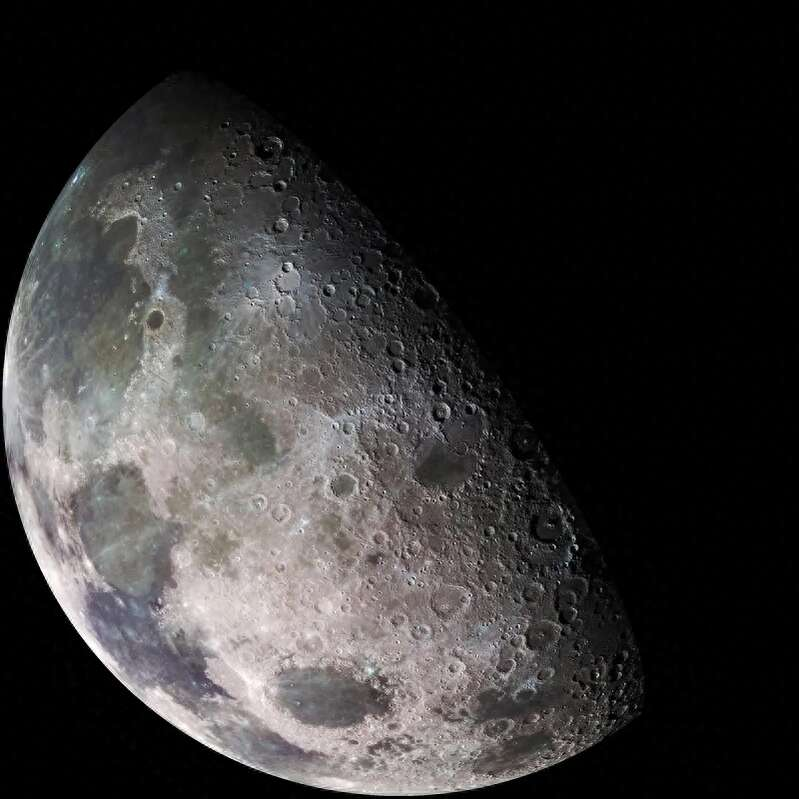

月球有一层稀薄的大气层（艺术想象图）。图片来源：美国国家航空航天局官网
月球上虽然没有可供呼吸的空气，但它确实拥有一层极其稀薄的大气层。月球的大气层是如何形成的？美国麻省理工学院和芝加哥大学的科学家在《科学进展》上发表论文指出，月球大气层主要是撞击汽化的产物。
如何理解撞击汽化过程呢？这要从月球土壤说起。分析表明，在月球45亿年的历史中，其表面不断受到撞击，先是巨大陨石，然后是尘埃大小的“微流星体”。这些持续的撞击将月球土壤掀起，使某些原子蒸发。一些原子被喷射到太空，而另一些原子则悬浮在月球上空，形成稀薄的大气层，随着陨石不断撞击月球表面，大气层不断得到补充。因此，撞击汽化是月球数十亿年来产生和维持极薄大气层的主要过程。
实际上，确定月球大气层来源的过程并不容易。2013年，美国国家航空航天局发射了月球大气与尘埃环境探测器，其任务旨在确定月球大气层的起源。
麻省理工学院地球、大气和行星科学系助理教授尼科尔·聂说：“我们推测两种太空风化过程在塑造月球大气方面发挥了作用，即撞击汽化和离子溅射。”离子溅射是一种涉及太阳风的现象。太阳风携带来自太阳的高能带电粒子穿越太空，当这些粒子撞击月球表面时，将能量传递给土壤中的原子，并使这些原子溅射到空中。
为了更准确地确定月球大气的起源，科学家收集了10个月球土壤样本，每个样本重约100毫克。他们尝试从每个样本中首先分离出钾和镭。这两种元素都是挥发性的，且每种元素都存在几种同位素，这意味着它们很容易通过撞击和离子溅射而蒸发。
科学家推断，如果月球大气层是由蒸发并悬浮在空中的原子组成，那么这些元素的较轻同位素应该更容易漂浮，而较重的同位素更有可能重新沉积在土壤中。撞击汽化和离子溅射可能会导致土壤中的同位素比例截然不同。土壤中钾和镭的轻、重同位素的具体比例应该可以揭示月球大气起源的主要过程。
进一步分析结果显示，70%的月球大气层或是陨石撞击产物，而其余30%可能是由太阳风形成的。